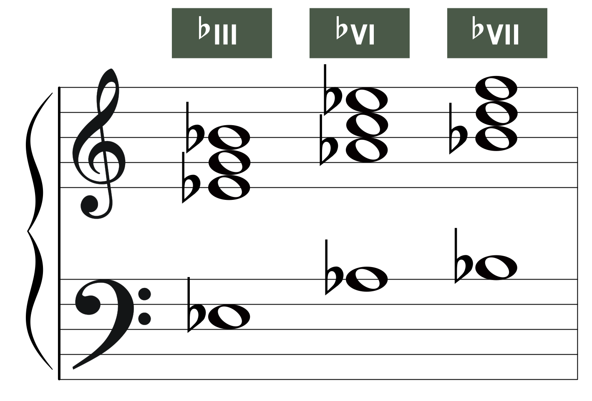
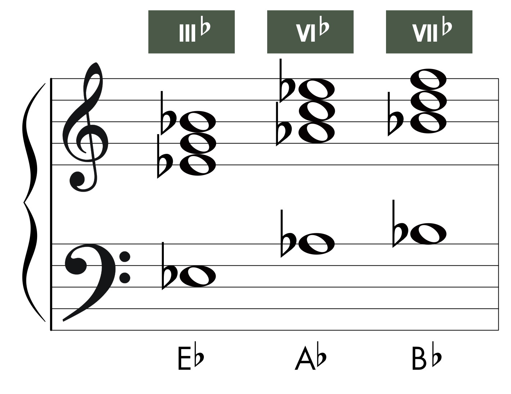

在上一篇文章中，我们已经全面盘点了从同主音小调借用和弦的基础模式。

接下来，我们将就其中的若干关键细节与进阶考量展开补充说明。
 1. 降 Mi、降 La、降 Si 的选择自主权
1. 降 Mi、降 La、降 Si 的选择自主权
在开篇我们曾概括为“从给 Mi、La、Si（E、A、B）加上降号的小调中借用”，但在实操中，完全可以只给 Mi、La、Si 中的某一部分音加上降号，使用其“派生形态”。
例如在使用 IVm 时，相关的音绝不仅限于“La（A）”。在其上方谱写旋律或伴奏织体时，必然面临“Si 与 Mi 究竟要不要加降号”的抉择；同理，在运用七和弦或引申音增添碰撞色彩时同样如此：

因此，请将以下三点核心原则牢记在心：
- 无论你如何给 Mi、La、Si 搭配降号，在理论上都存在着与之对应的自洽解释，请完全卸下心理包袱、大胆按自己的审美去尝试。
- 究竟给哪些音加降号，取决于你想表达的意境、旋律走向以及前后和弦的声部连接。
- 在乐队合奏或需要与他人排练沟通时，最好提前对齐确认究竟哪几个音需要加降号。
即便仅以六大基调和弦为底座，由于 Mi、La、Si 是否降音各有不同组合，交织在一起便能衍生出多达 42种全新的表现色彩。至于具体该如何搭配，首先应当在实战中用耳朵去体会它们微妙的声响差异；此外在旋律篇第IV章中，我们还会专门探讨降号的选择对旋律线条起伏带来的深刻影响。
降音选择引发的和弦代号变化
尤其需要警惕的是升级为七和弦的时刻：对于 I、IV、♭VII 而言，是否给 7th（七音）加上降号，将直接导致和弦代号发生质变！在把亲自编写的和弦谱交给乐手演奏时，此处务必多加留心：

代号中的“mΔ7”是指“小大七和弦（Minor Major Seventh）”。如果想当然地认为“既然给 IVm 加上七音，那代号肯定叫 IVm7 吧！”，实际上等于向演奏者宣告了“请将 Mi 降”，这一点极易造成编曲误会，须多加防范。
基于声响与语境的选择范例 ①
前面提到降号的取舍应“根据想表达的情调、旋律线以及前后语境综合权衡”，具体究竟该如何操作？让我们来看实际范例：
IIm7 IIIm7 IVm7 V
这是上一课介绍过的 IVm 经典用法，这次我们标注出了精确严谨的七和弦代号。此处采用了 IVm7，意味着明确做出了“将 Mi 降半音（E♭）”的选择；尽管未体现在代号中，伴奏也将 Si 进行了降半音（B♭），呈现出彻底的“全降（All-flat）”状态。
此处选择“全降”有两个强有力的逻辑支撑： 其一，为了给后续奔向 V 蓄足戏剧张力，创作者渴望营造出撕心裂肺的极致哀愁。为此需要与原有大调基调形成最强烈的反差对比，因而果断选择全降。 其二，源自前后和弦的声部连接（Voice Leading）：将 Mi 降半音后，能与后续的 V 和弦形成极为丝滑顺畅的半音级进关系：

竟然同时出现了3条平滑的半音流动线条！这属于极高级别的丝滑声部连接。综合以上两点，此处选择“全降”无疑是最上乘的选择。
基于声响与语境的选择范例 ②
然而在另一种语境下，我们可能渴望尽可能保留自然还原音（Natural）：
IVΔ7 IVmΔ7 IIIm7 VIm7
这是一个仅将 La 降半音（保持 Mi 还原）的“淡雅清爽”案例，和弦代号相应记作 IVmΔ7（小大七和弦）。
这同样立足于两大充分理由： 首先是旋律线：得益于将 Mi 保持为自然还原音，高声部的小提琴织体得以唱出“Mi-Fa-Sol-Fa-Mi-Re”这段听众耳熟能详的纯正自然大调旋律。借此将离调转调的异物感压制到最低，呈现出极为内敛含蓄的优雅表达。 其次，周围的其他和弦构成音全部都包含还原的 Mi。比起突兀地将 IVm 变成 E♭，全程维系还原 Mi 这一共同音，整体和声的横向流动显然更具内在凝聚力。
在流行音乐中，旋律拥有至高无上的第一优先级。因此编曲流程通常是：首先严格顺应心中所渴望的旋律线条来敲定降号的取舍；在此基础上，旋律未涉及的其余声部，再综合权衡前后和弦连接平滑度、情绪烈度以及离调对比度来最终定夺。
借助五度圈速查借用和弦
在作曲实战中若想一览无余地查阅当前调性能够借用的全部同主音小调和弦，再次化身为光速检索神器。 正如之前所讲，任意大调的六大基调和弦在五度圈上紧密抱团；而其对应的同主音小调和弦群，恰好密集分布在沿五度圈逆时针倒退 90° 的区域：

看吧，刚才介绍的各路借用猛将全都整齐划一地集结在此处。
2. 关于学术称谓的江湖风云
讲到这里，大家可能注意到我们一直没有给这项技法正式定名。这是因为该技法的专业称谓在学术界极其错综复杂，不同流派不仅叫法各异，其指涉的内涵外延同样模糊拉扯、从未达成大一统。常见的几大称谓梳理如下：
- 准固有和弦（Borrowed Chords / 準固有和音） 古典和声学派的标准统称。然而古典派有一整套专属的借用范式，其借用逻辑与现代流行乐存在细微出入。
- 调式互换（Modal Interchange / モーダル・インターチェンジ） 爵士乐理学派的核心称谓。然而它绝不仅限于借用降 Mi、La、Si，而是涵盖了从各种不同中古调式（Modes）中“借用音阶”的宏大技法全貌，其外延远比本篇讲解的范围要辽阔得多。
- 同主调借用 / 同主调转换 现代流行乐理中常见的通俗称谓。但在仅部分音降半音的微调形态究竟算不算同主调借用上，各路教材含糊其辞、鲜有明确界定。
每一个术语后面都跟着长长的“但是……”。考虑到百年来的流派传承与庞大的学术群体，这种割裂在所难免。令人无奈的是，使用不同术语往往容易招致各派原教旨主义者的口诛笔伐：
 古典派严肃学者：“你说的这个根本不符合准固有和弦的标准定义，请立即更正。”
古典派严肃学者：“你说的这个根本不符合准固有和弦的标准定义，请立即更正。”
 爵士派严肃乐手：“你在极其狭隘的语境下滥用了‘Modal Interchange’一词，这会误导大众。你究竟懂不懂‘Modal’的真正含义？”
爵士派严肃乐手：“你在极其狭隘的语境下滥用了‘Modal Interchange’一词，这会误导大众。你究竟懂不懂‘Modal’的真正含义？”
 挑刺考据党：“仅仅降了一个 La，这在严格意义上也能配叫同主调借用吗？请这位同学先阐述清楚‘调性’的哲学定义。”
挑刺考据党：“仅仅降了一个 La，这在严格意义上也能配叫同主调借用吗？请这位同学先阐述清楚‘调性’的哲学定义。”
 瑟瑟发抖……
瑟瑟发抖……
自由派音乐理论自立门派的初衷正是为了彻底告别这类无休止的门派内耗，因此对于争议地带，我们确立清晰自洽的全新概念予以统摄： 自由派音乐理论将从给 Mi、La、Si 任意施加降号的音阶中借用而来的和弦群，取英文“同主音小调”之意，统称为同主音小调和弦（Parallel Minor Chords / パラレルマイナー・コード）。
同主音小调和弦 (Parallel Minor Chords) : 指从大调音阶中将 Mi、La、Si 任意音施加降号所构成的音阶中，临时借用而来的和弦群的统称。
在日常语境下，亦可直接简称为“Parallel Minor（同主小调借音）”。例如随口说一句“这里的 IVm 是同主小调借音”，大家便能心领神会其来源背景。
这些和弦究竟来自哪个调？
值得玩味的是，像 ♭VII 或 Vm 这类和弦（在 C 大调中对应 B♭ 与 Gm），不仅属于 C 自然小调，同时也是 F 大调的顺阶基调和弦：

前文在剖析 Vm 时也曾提及这一点。因此，尽管我们在本单元将其归为“借自 C 小调”，但当在真实曲目中与它们相遇时，在某些语境下将其理解为“借自 F 大调（下属调）”反而更加顺理成章，这一点需要引起大家的适度关注：

这是我们在“副属和弦”中介绍过的：以 IV 为临时领袖打出 2-5-1 三连击的经典套路。此时出现的 Vm7 显然源自 F 大调的顺阶体系，很难强行认定其来源于 C 小调[31]。 由此可见，严密推敲这些和弦的内在渊源极具深意；在不同语境下甚至可能呈现出模棱两可的双重属性。这种“外观相同、血统各异”的奇妙现象，正是和声分析中最令人着迷的探案乐趣之一。
3. 记谱书写习惯
顺便探讨一下记谱习惯：平时写临时变音记号时习惯写在音名右侧（如 F♯、B♭）。然而在书写级数代号（罗马数字）时，将升降号标注在左侧是世界通行的传统规范（如 ♭III、♭VI、♭VII）。古典学派与爵士学派在此达成高度一致，在当今主流流行乐理中同样占据压倒性统治地位。这一习惯的形成，主要是为了与五线谱上的视觉呈现保持一致：


五线谱上的升降号确实印在音符左侧，这样视奏者在眼睛扫到音符前能提前预判升降。刚从和弦名切换到级数代号时可能会有些许不习惯，请尽快适应这种国际标准写法。 不过也存在着极少数诸如“III♭、VII♭”这样将升降号标在右侧的书写变体，其立论出发点是为了与绝对和弦代号（如 B♭）保持一致：


这种写法虽属少数派，但在部分流行编曲从业者或某些出版专著中也偶有一见[32]。每种写法都有其特定逻辑，创作中可结合实际需求灵活选用。但当提交乐谱给资深音乐家或学术导师时，遵循左侧标准无疑是最妥帖周到的专业礼仪。
至此，通过将 ♭III、♭VI、♭VII 这组全新的调外根音和弦收入囊中，我们迎来了第II章最丰硕的理论战果！至此，大家的和声调色盘得到了史诗级的扩充。 在紧接而来的第III章中，我们将进一步邂逅“aug（增和弦）”、“dim（减和弦）”等跳脱于常规大小三和弦之外的奇异新朋友。请根据自身创作节奏稳步迈进！
总结
- 凡是从大调音阶中给 Mi、La、Si 任意施加降号所构成的音阶中借用而来的和弦，自由派统称为“同主音小调和弦（Parallel Minor Chords）”。
- 基于该逻辑最核心可调用的主力包括 Im、♭III、IVm、Vm、♭VI、♭VII 六个和弦，其中以 IVm 与 ♭VII 最为经典通用。
- ♭III、♭VI、♭VII 构成了营造美式摇滚、律动暗黑曲风的灵魂铁三角。

和弦篇第II章至此圆满结业！衷心祝贺大家顺利通关！请大家合理规划后续的学习节奏，在创作实战与和声分析中将所学融会贯通！